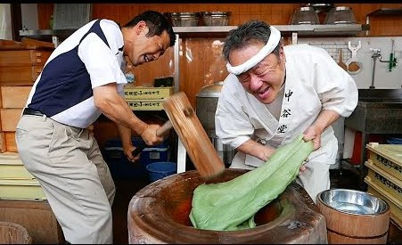

Proses Pembuatan:
- Bahan utama:
- 150 gram tepung ketan putih
- 50 gram tepung beras
- 150 ml air
- Pewarna dan isian sesuai selera
Cara membuat mochi:
- Campurkan tepung ketan dan tepung beras.
- Tuang air sedikit demi sedikit sambil diuleni hingga kalis.
- Bagi adonan menjadi beberapa warna jika ingin diberi pewarna makanan.
- Pipihkan adonan dan isi dengan selai atau cokelat batang sesuai selera.
- Bulatkan atau bentuk adonan sesuai kreasi.
- Kukus selama 15 menit di api sedang.
- Dinginkan mochi dan siap disajikan.